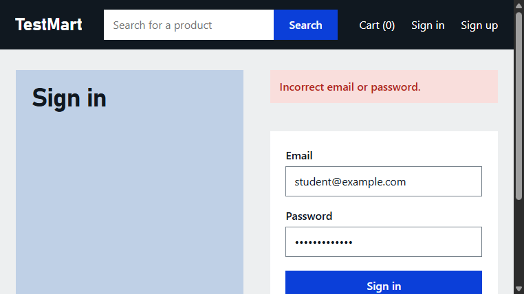
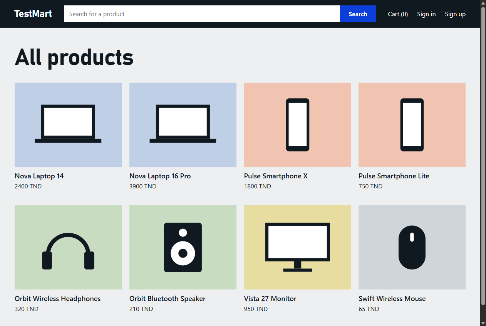
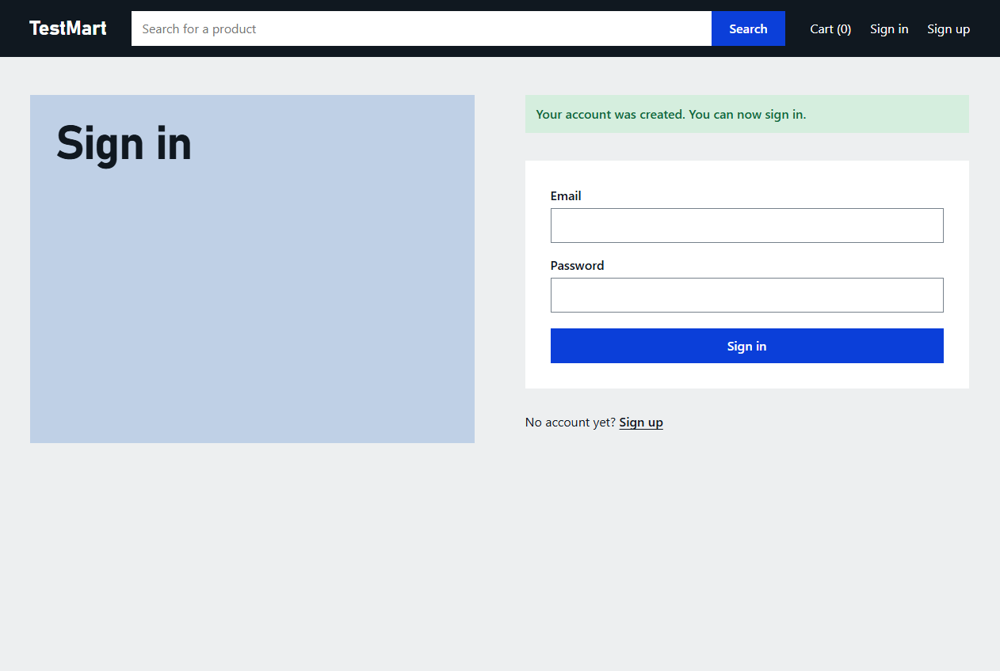
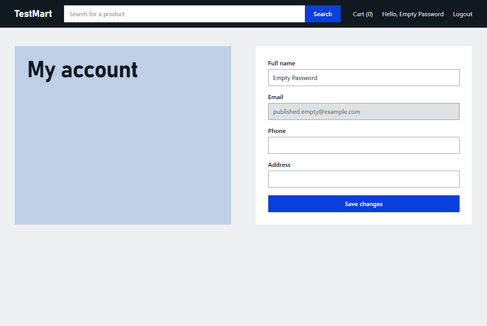
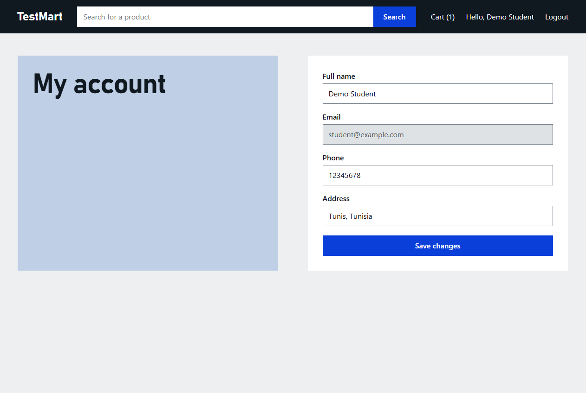
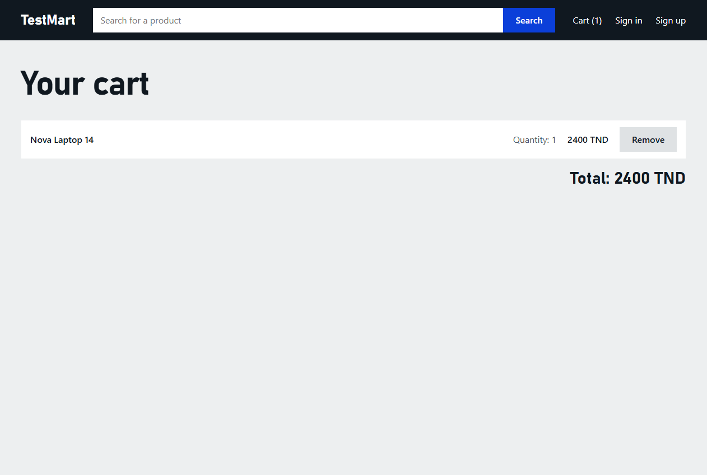
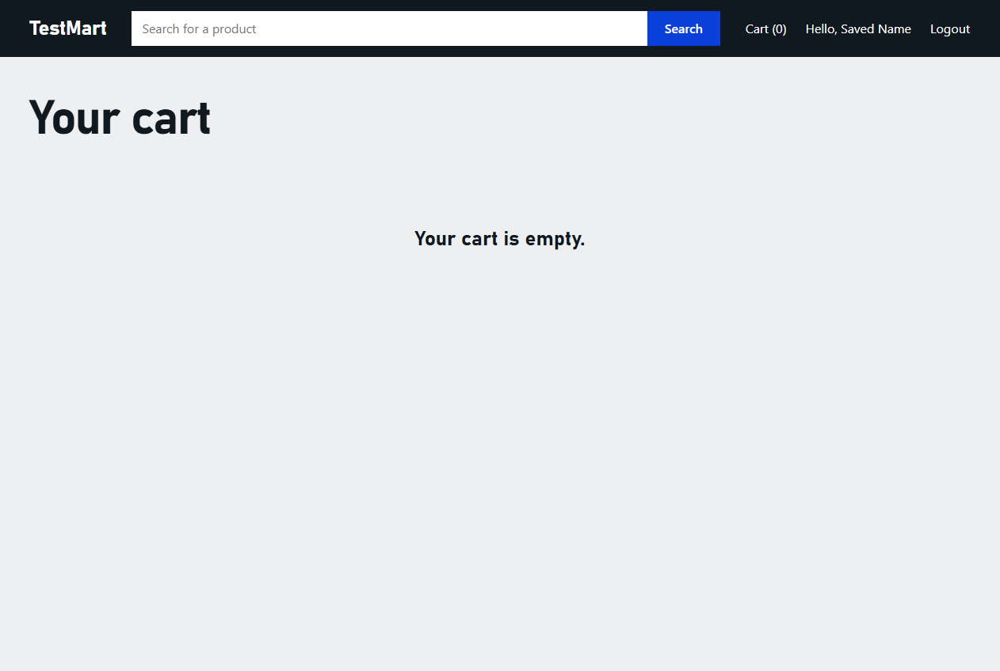

CS 428 - Software Quality & Testing
Lab 5 Part 2 - Test Automation and CI/CD
Student GitHub username: adam12bT
Platform adaptation: GitHub Actions and GitHub Pages
All twelve experiment workflows were executed on the repository's main branch.
Every result below is backed by an actual commit, workflow log, and job status.
Published-site checks used a separate Selenium browser session against the
public HTTPS site, rather than a manual browser session. Screenshots and probe
output are included under evidence/. No real customer data was used: TestMart
stores these disposable test accounts and carts only in browser localStorage.
1. Creating the project
Repository: https://github.com/adam12bT/test_ci-cd
Published site: https://adam12bt.github.io/test_ci-cd/
The initially empty repository was populated and pushed to main as adam12bT.
GitHub Pages was enabled with build_type=workflow. The original GitLab platform
was replaced with GitHub at the student's request; instructor acceptance of the
platform substitution is not asserted by this report.
2. Adding the pipeline
website/, src/, .gitignore and the supplied .gitlab-ci.yml came from Lab5Part2.zip.
GitHub executes .github/workflows/test-and-deploy.yml. The original GitLab file
is retained as supplied reference material and is not executed by GitHub.
3. Understanding the pipeline
The test job uses an Ubuntu runner, sets up Java 21, downloads Selenium 4.52.0
and JUnit 4.13.2, serves website/ on localhost:5500, compiles Java, and invokes
JUnitCore. A nonzero test exit status fails the job. Logs are retained even on
failure. The deploy job declares needs: test, so failing tests skip deployment.
Only the default branch deploys; pull requests only run tests. The deployment
uploads website/ as a Pages artifact and publishes it to GitHub Pages.
The modern official action versions avoid the earlier Node 20 deprecations.
4. Running the pipeline: headless Chrome
04a: Without headless mode, all six original tests failed with
SessionNotCreatedException: Chrome instance exited. Deploy was skipped.
04b: Restoring headless Chrome produced OK (6 tests) and a successful deployment.
Code in WorkingWithChrome.invokeBrowser():
ChromeOptions options = new ChromeOptions();
options.addArguments("--headless=new", "--no-sandbox", "--disable-dev-shm-usage");
driver = new ChromeDriver(options);
Import org.openqa.selenium.chrome.ChromeOptions was added. Teardown guards a
null driver, so it does not obscure initialization failures with a secondary
NullPointerException. Chrome needs headless mode because the runner has no GUI.
5.1 A bug in sign in
51a: Removed the password comparison in findAccount():
if (users[i].email == email) { return users[i]; }
TestingLoginFalsePassword failed. Deploy was skipped. An independent browser
check against the published website confirmed that a wrong password was still
refused: login-error was present and nav-logout absent. The broken source did
not replace the previously deployed working site.
51b: Restored email AND password comparison. Six tests passed and deploy passed.
5.2 A bug in the home page
52a: Replaced the index.html title with Broken Store. TestingWebsiteTitle failed
because the expected title was TestMart - Online Store. Deployment was skipped.
The independent published-site browser check confirmed the old correct title.
52b: Restored the title. Six tests passed and deployment resumed successfully.
5.3 A bug the original tests miss
53a: Removed password == "" from isSignUpFormComplete(). All six original tests
passed and deployment succeeded. The published-site probe created an account
with an empty password and then logged into it successfully using an empty
password. Passing existing tests did not establish valid password handling.
53b: Added the following test WITHOUT fixing shop.js:
@Test
public void TestingSignUpEmptyPassword() {
connection.signUp("Empty Password", "empty.password@example.com", "");
assertTrue(connection.isSignUpErrorDisplayed());
assertFalse(connection.isSignUpSuccessful());
}
The new test failed; deployment was skipped. It exercises the previously
untested invalid input and checks rejection rather than a success message.
53c: Restored password == "" in validation. All seven tests passed and deployed.
5.4 Tests that miss bugs
54a: Introduced all three bugs together:
createAccount(): omitted saveUsers(users).
removeFromCart(): used saveCart(cart) instead of saveCart(newCart).
saveAccount(): omitted saveUsers(users).
The original weak tests plus the new empty-password test all passed: seven
tests green and successful deployment. Published-site browser checks proved:
- Signup displayed success, but logging in with the new account failed.
- Removing Nova Laptop 14 left it in the cart after reopening the cart.
- Saving account details displayed success, but reopening the account page
restored Demo Student and phone 12345678 instead of the entered values.
Conclusion: confirmation messages and form values can be misleading when the
test never checks saved state or checks no result after an action.
54b: Improved the three tests WITHOUT fixing the three bugs:
TestingSignUpSuccess: after the success message, login with
new.student@example.com / Pass1234 and assertTrue(isLoggedIn()).
TestingAddAndRemoveFromCart: after removal, assertFalse(
connection.isProductInCart("Nova Laptop 14")). The helper opens the cart.
TestingEditAccountInformation: check the save message, call openAccountPage(),
then assertEquals("Edited Name", getAccountName()) and
assertEquals("98765432", getAccountPhone()).
Exactly those three tests failed. Deployment was skipped. The improved tests
check the actual outcomes and persistence across page navigation.
54c: Restored saveUsers(users) in createAccount() and saveAccount(), and restored
saveCart(newCart) in removeFromCart(). All seven improved tests passed and the
working site deployed again. A final independent live-site browser check also
verified signup/login, persisted name/phone changes, and successful cart removal.
Conclusion
CI prevents publication of bugs only if a test exercises the affected behavior
and checks its real outcome. Negative tests, checking removal, and reopening a
page to verify persistence exposed defects that success-message checks missed.
The final repository contains the working shop and seven strengthened tests.
Evidence index (actual results)
===============================
04a-no-headless
Commit: https://github.com/adam12bT/test_ci-cd/commit/3e7d3d9941bef38992af2b6a5f720091a2348bc9
Run: https://github.com/adam12bT/test_ci-cd/actions/runs/44958850654
JUnit: Tests run: 6, Failures: 6
Failing tests: TestingLoginSuccess, TestingAddAndRemoveFromCart, TestingSignUpSuccess, TestingLoginFalsePassword, TestingWebsiteTitle, TestingEditAccountInformation
Jobs: test=failure, deploy=skipped
04b-headless-fixed
Commit: https://github.com/adam12bT/test_ci-cd/commit/43cd4e3a814457c40f7bf0f019c591a33c0fa9c3
Run: https://github.com/adam12bT/test_ci-cd/actions/runs/44958901764
JUnit: OK (6 tests)
Failing tests: none
Jobs: test=success, deploy=success
51a-wrong-password-bug
Commit: https://github.com/adam12bT/test_ci-cd/commit/b9fcaf354c7ddcd9ff75b409bfdb1e48ca71379b
Run: https://github.com/adam12bT/test_ci-cd/actions/runs/44959133087
JUnit: Tests run: 6, Failures: 1
Failing tests: TestingLoginFalsePassword
Jobs: test=failure, deploy=skipped
51b-password-fixed
Commit: https://github.com/adam12bT/test_ci-cd/commit/ace88b6a368643ada775b1a388a3d9fb0fe503dd
Run: https://github.com/adam12bT/test_ci-cd/actions/runs/44959217598
JUnit: OK (6 tests)
Failing tests: none
Jobs: test=success, deploy=success
52a-title-bug
Commit: https://github.com/adam12bT/test_ci-cd/commit/28d115b29fc187383329136637e6aaa0eb60ad79
Run: https://github.com/adam12bT/test_ci-cd/actions/runs/44959323736
JUnit: Tests run: 6, Failures: 1
Failing tests: TestingWebsiteTitle
Jobs: test=failure, deploy=skipped
52b-title-fixed
Commit: https://github.com/adam12bT/test_ci-cd/commit/84dc171e3ad2df2f0008cc991a4b4fcde3dc11bd
Run: https://github.com/adam12bT/test_ci-cd/actions/runs/44959421114
JUnit: OK (6 tests)
Failing tests: none
Jobs: test=success, deploy=success
53a-empty-password-missed
Commit: https://github.com/adam12bT/test_ci-cd/commit/2625d28459260ba565c4e9f5a8943f6d9c7b5c58
Run: https://github.com/adam12bT/test_ci-cd/actions/runs/44959497672
JUnit: OK (6 tests)
Failing tests: none
Jobs: test=success, deploy=success
53b-empty-password-detected
Commit: https://github.com/adam12bT/test_ci-cd/commit/9677436f4bd202d39221e6da85d5a1c81ea29eda
Run: https://github.com/adam12bT/test_ci-cd/actions/runs/44959595631
JUnit: Tests run: 7, Failures: 1
Failing tests: TestingSignUpEmptyPassword
Jobs: test=failure, deploy=skipped
53c-empty-password-fixed
Commit: https://github.com/adam12bT/test_ci-cd/commit/a401777556cf9c158b698f2d7744b5b03e4c9bf4
Run: https://github.com/adam12bT/test_ci-cd/actions/runs/44959691050
JUnit: OK (7 tests)
Failing tests: none
Jobs: test=success, deploy=success
54a-three-bugs-missed
Commit: https://github.com/adam12bT/test_ci-cd/commit/8a1ce13b1d221bc47a553d0cba394acca7b2c1b7
Run: https://github.com/adam12bT/test_ci-cd/actions/runs/44959791762
JUnit: OK (7 tests)
Failing tests: none
Jobs: test=success, deploy=success
54b-three-bugs-detected
Commit: https://github.com/adam12bT/test_ci-cd/commit/5abdc1c05f173a5ae941c4e3219b31eac319dde4
Run: https://github.com/adam12bT/test_ci-cd/actions/runs/44959914248
JUnit: Tests run: 7, Failures: 3
Failing tests: TestingAddAndRemoveFromCart, TestingSignUpSuccess, TestingEditAccountInformation
Jobs: test=failure, deploy=skipped
54c-three-bugs-fixed
Commit: https://github.com/adam12bT/test_ci-cd/commit/2da0fba72441d84efebac052f543a5da4cd11b19
Run: https://github.com/adam12bT/test_ci-cd/actions/runs/44959982421
JUnit: OK (7 tests)
Failing tests: none
Jobs: test=success, deploy=success






